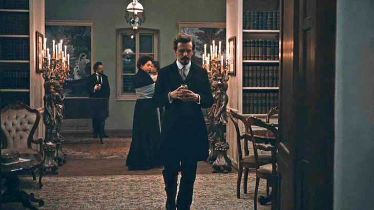
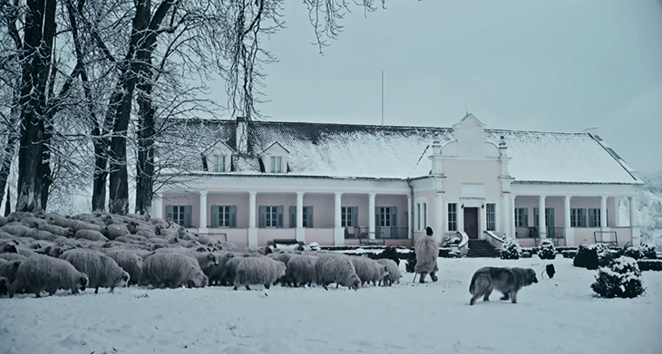

Some Notable Events
Apafi Manor the setting for award winning film "Malmkrog"
1st March 2020


At this year's Berlin International Film Festival, the award for Best Director in the Encounters Competition went to Cristi Puiu for his film "Malmkrog". The film is based on a text by Russian philosopher Vladimir Solovyov and is described as a global journey through history, a tour de force of thought. It was entirely shot in and around the Apafi Manor.
After filming had completed the Manor's library was left in a state of disarray. We are truly grateful to Dr Daniels, Professor Mark Almond and David Campbell of Everyman Books who, along with Mary Walsh and Jessica Douglas-Home, in a space of just 3 days put all the books back into their original order.
LONDON SCHOOLS SYMPHONY ORCHESTRA ROMANIAN TOUR
July 2018
.jpg)
Peter Ash, conductor of the London Schools Symphony Orchestra
The MET was delighted to welcome this remarkable orchestra, which came to Mălâncrav on Tuesday 31st July. The hundred strong group of young players, was lead by their conductor Peter Ash. They spent a day working and playing with village dancers and musicians who were under the guidance of Andrea Rost. In the evening they gave a concert at the Apafi Manor which included: - Faure's Pelleas et Melisande Suite Op 80, Conductors Lucas Boardman and Pooja Low - Debussy's Premiere Rhapsodie, Clarinet Soloist - James Garagnon - Conductor Hugo Williams - Traditional Saxon Dance Music (arr. John Kirby), Marsch, Jungsachsisch and Neppendorfer Landler II Conductors - John Nation, Tanner Hatzmann and Archie Young-Lee
2022 Transylvanian Book Festival in Richis
Once again MET will be pleased to support the Book Festival in Richis, which this year is between 9th - 12th September. Programme 2021
It is hoped that two major Romanian writers will also be able to join us. And we look forward to talks on the nostalgia of food; the healing power of forgiveness; concerts; dramatic performance and wine tasting. For information about 2022 Festival: Click here